CIRYA
Defining the standard for independent global journalism and media infrastructure.
Careers
Join a world-class team of engineers and journalists building the future of digital media.

Ethics
Our commitment to transparency, integrity, and journalistic independence.
Live Network Intelligence
Infrastructure
Cirya maintains a resilient, high-availability network designed for real-time global news delivery.
Network Status
Global Mesh
Active
Internal Access
cast.cirya.co